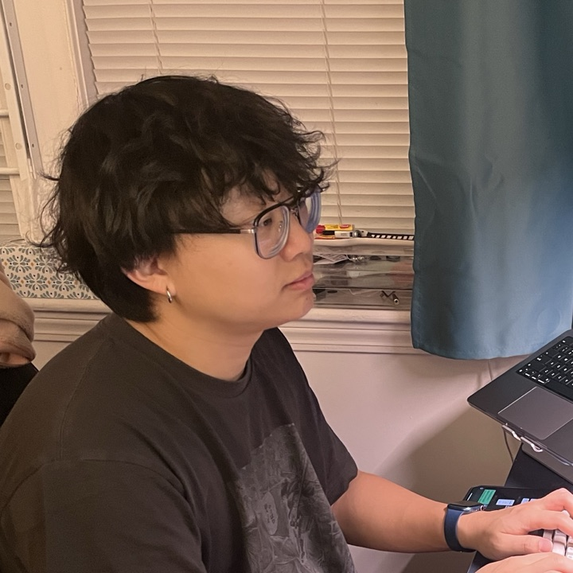
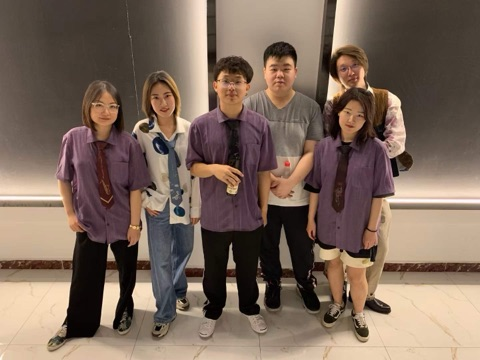
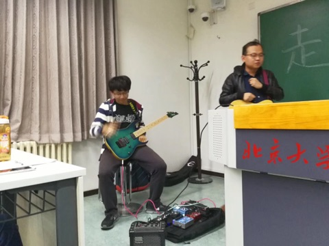
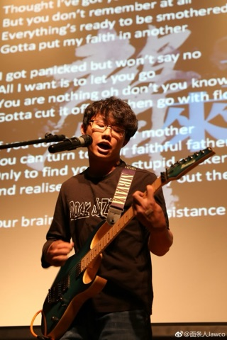
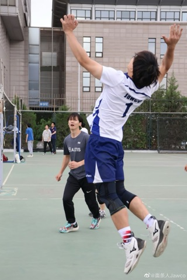

Software Development Engineer
Zihan Xu “Zee”
Amazon Web Services · Aurora DSQL Storage
01About
I build and benchmark high-performance storage systems at Amazon Web Services, where I work on the storage engine behind Aurora DSQL.
On the Aurora DSQL Storage team, I develop storage-engine components in Rust, design benchmarks that measure and push their performance, and take part in the CI/CD pipelines and cloud operations that keep the service running reliably in production.
I hold an M.S. in Computer Science from Northeastern University, and before that I studied Communication and Media Science at Peking University, a background that shapes how I work with teams and communicate technical ideas. Outside of work I play guitar, bass, and saxophone, and I am always glad to talk systems, music, or trivia.
02Experience
-
Software Development EngineerAmazon Web Services · Aurora DSQL Storage2026 – Present
- Develop components of a high-performance storage engine in Rust for Amazon Aurora DSQL, a serverless distributed SQL database.
- Design and run benchmarks to measure, profile, and improve storage-engine performance.
- Contribute to CI/CD pipelines and cloud operations that support the service in production.
-
Software Development Engineer InternAmazon Web Services · Aurora DSQL StorageJun – Sep 2025
03Publications
- Affective and Functional Needs in AI Use: User Patterns and Their Relation to Real-Life Support and Well-Being ACII 2026
- How Multimodal Self-Disclosure Shapes Emotional Engagement and Cognitive Load: An Exploratory Physiological Study MHCI · Paper No. 135
04Education
-
M.S., Computer ScienceNortheastern University, Boston2023 – 2026
-
M.A., Media Science · B.A., Communication and Media StudiesPeking University, Beijing2017 – 2023
05Skills
- Languages
- Rust (primary), Python, Java, C++, SQL / PostgreSQL
- Storage
- LSM trees and compaction, B-trees and page management, write-ahead logging, durability and crash recovery
- Distributed Systems
- Replication, partitioning, and consistency in distributed databases; gRPC and Protocol Buffers
- Performance
- Benchmark design, profiling and flame graphs, async Rust and concurrency, low-level optimization of memory and I/O
- Cloud & Ops
- AWS, CI/CD pipelines, infrastructure as code, on-call and operational excellence
- Also
- Django, Vue.js, Swift / UIKit, Firebase, LangChain, PyTorch
06Honors
-
Scientific Innovation ScholarshipPeking University · $2,500 per year2021
-
May 4th ScholarshipPeking University · $1,0002018
-
Award for Contribution in Student OrganizationsPeking University · Guitar Association2018
07Music · Soulo
08Leadership & Community
-

President, Guitar Association of Peking University
Promoted music education on campus, built a network with three major music organizations, organized regular performances, and performed with several bands.
-

Music and Music-Technology Educator
Teaches music and gives seminars on music theory and technology, advocating for software and AI that help people create art rather than replace them in the creative process.
-

Multi-Instrumentalist
Plays guitar, bass, and saxophone across rock, blues, soul, funk, R&B, and jazz.
-

Volleyball Player and Coach
Earned multiple medals in the Peking University Cup as both a player and a coach.